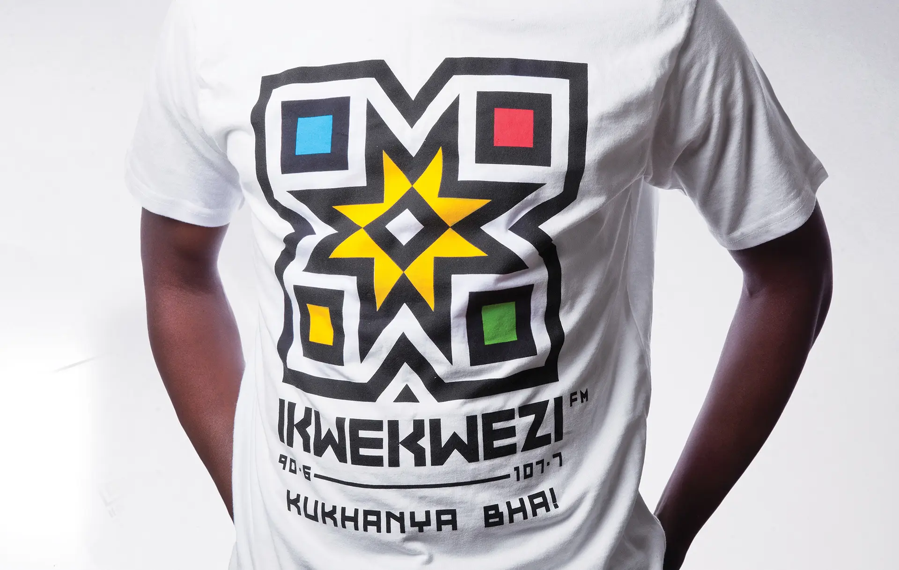
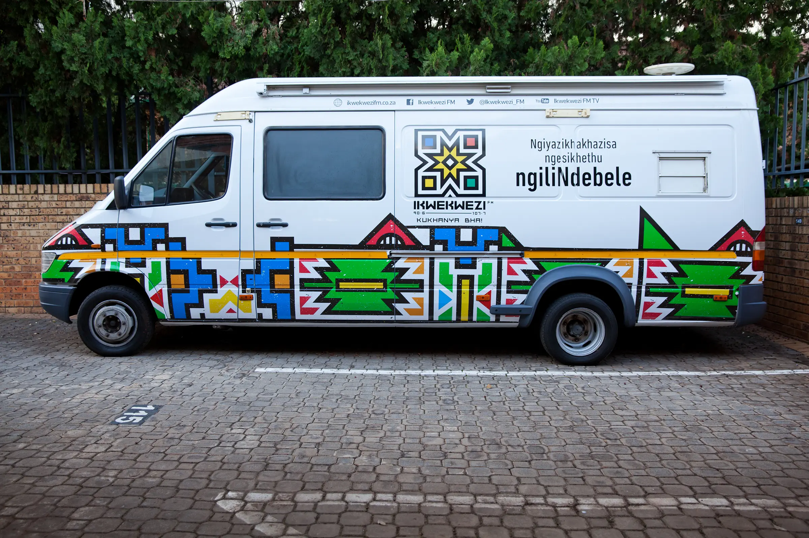
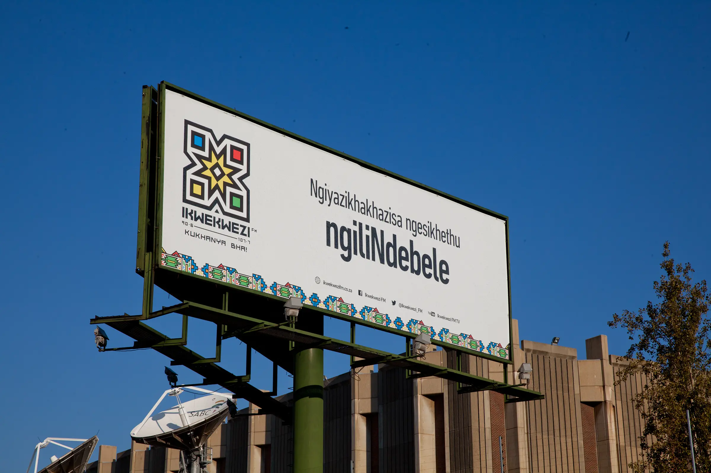
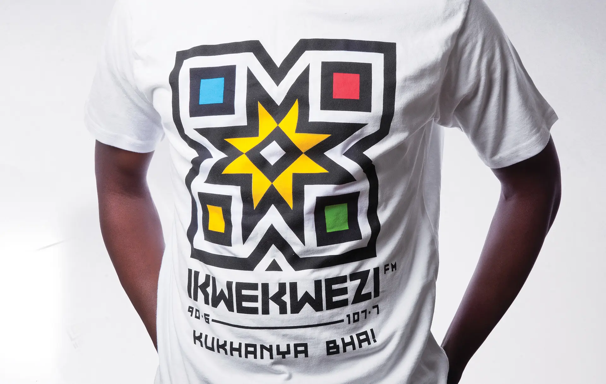
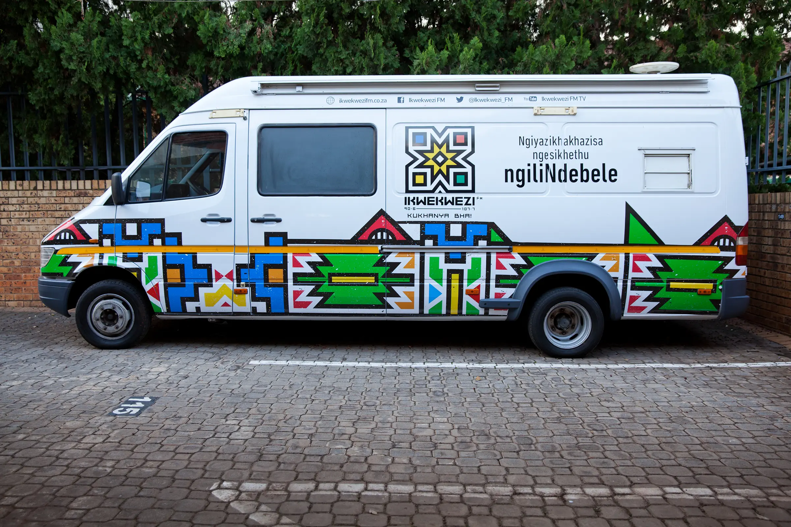
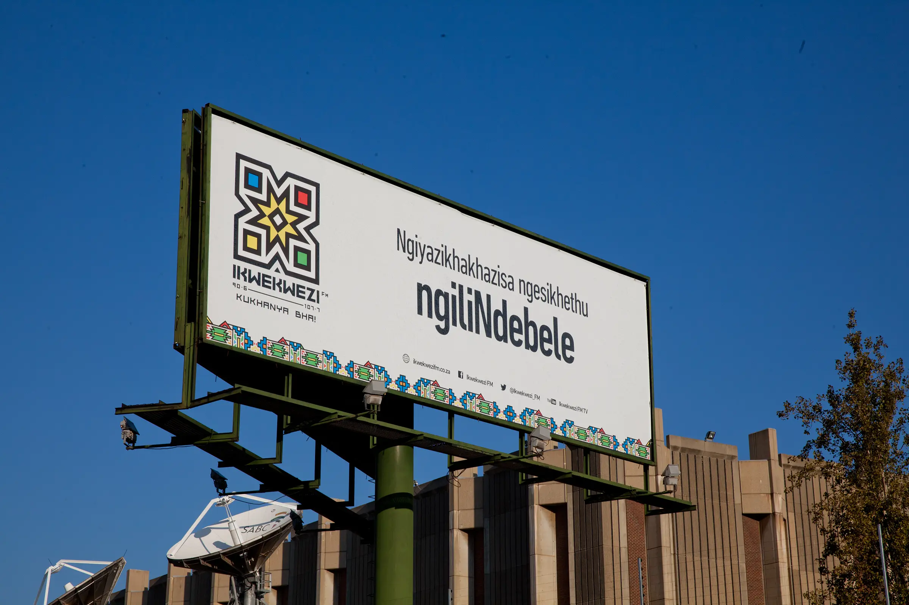
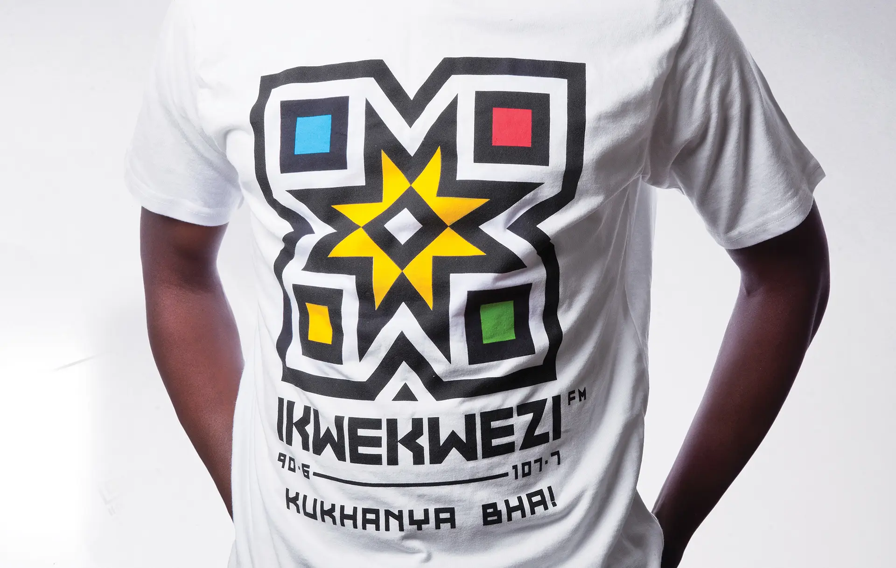
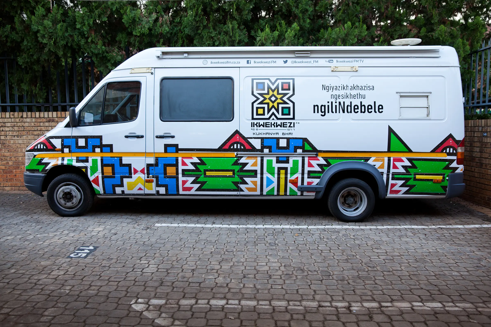
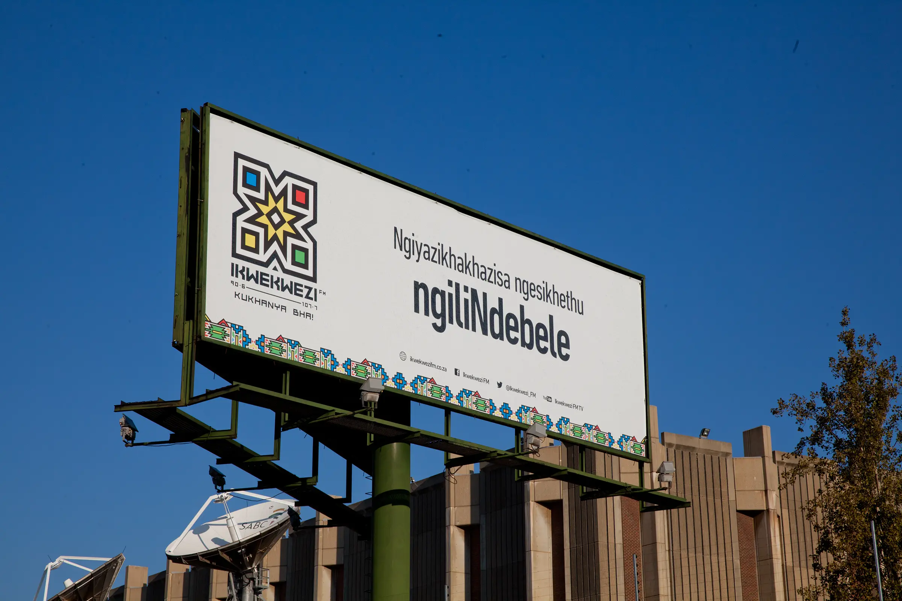

tshumaosmond@gmail.com
@wakwatshuma
South Africa
A SHINING STAR: BRIDGING THE PAST AND THE PRESENT
SABC Radio’s IKwekwezi FM is an icon of the Ndebele culture – known around South Africa and the world for its visual expression, bright colours and imaginative geometry. But IKwekwezi FM’s logo hadn’t changed in almost 20 years. A lot had changed for the amaNdebele people in that time, including significant migration to urban areas. The old logo was struggling to live up to both the traditional Ndebele aesthetic, and the contemporary, urban aesthetic of many of its listeners.
The logo required a re-design that could uphold Ndebele heritage and culture but give it the freshness and vigour it needs to take its place in the modern South African landscape. It also needed to to live up to the brand’s new pay-off line: Kukhanya Bha! meaning ‘shining bright.’
The approach
Ikwekwezi itself means ‘star’ and ‘achievement’ – hence the retention and re-invention of the iconic Ndebele star at the heart of the design. We also researched the culture’s traditions and art, taking inspiration for the logo design from the Ndebele’s beautiful, bright colours in traditional regalia, mural art and bead work. The colours used in the design all have a specific meaning, and were carefully chosen for their symbolism.
The logo you can listen to
Key to this was incorporating the symbolic concept of a modern-day radio speaker into the design of the logo to represent the fact that the radio station is the sound of the AmaNdebele. When one looks at the logo, it delivers the illusion of movement, mimicking a speaker playing at full volume.
__


